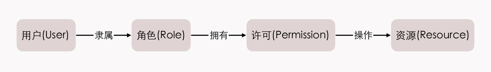

- 00 _导读 _ 什么是“The Fenix Project”？.md.html
- 00 开篇词 _ 如何构建一个可靠的分布式系统？.md.html
- 01 _ 原始分布式时代：Unix设计哲学下的服务探索.md.html
- 02 _ 单体系统时代：应用最广泛的架构风格.md.html
- 03 _ SOA时代：成功理论与失败实践.md.html
- 04 _ 微服务时代：SOA的革命者.md.html
- 05 _ 后微服务时代：跨越软件与硬件之间的界限.md.html
- 06 _ 无服务时代：“不分布式”云端系统的起点.md.html
- 07 _ 远程服务调用（上）：从本地方法到远程方法的桥梁.md.html
- 08 _ 远程服务调用（下）：如何选择适合自己的RPC框架？.md.html
- 09 _ RESTful服务（上）：从面向过程编程到面向资源编程.md.html
- 10 _ RESTful服务（下）：如何评价服务是否RESTful？.md.html
- 11 _ 本地事务如何实现原子性和持久性？.md.html
- 12 _ 本地事务如何实现隔离性？.md.html
- 13 _ 全局事务和共享事务是如何实现的？.md.html
- 14 _ 分布式事务之可靠消息队列.md.html
- 15 _ 分布式事务之TCC与SAGA.md.html
- 16 _ 域名解析系统，优化HTTP性能的第一步.md.html
- 17 _ 客户端缓存是如何帮助服务器分担流量的？.md.html
- 18 _ 传输链路，优化HTTP传输速度的小技巧.md.html
- 19 _ 如何利用内容分发网络来提高网络性能？.md.html
- 20 _ 常见的四层负载均衡的工作模式是怎样的？.md.html
- 21 _ 服务端缓存的三种属性.md.html
- 22 _ 分布式缓存如何与本地缓存配合，提高系统性能？.md.html
- 23 _ 认证：系统如何正确分辨操作用户的真实身份？.md.html
- 24 _ 授权（上）：系统如何确保授权的过程可靠？.md.html
- 25 _ 授权（下）：系统如何确保授权的结果可控？.md.html
- 26 _ 凭证：系统如何保证与用户之间的承诺是准确完整且不可抵赖的？.md.html
- 27 _ 保密：系统如何保证敏感数据无法被内外部人员窃取滥用？.md.html
- 28 _ 传输（上）：传输安全的基础，摘要、加密与签名.md.html
- 29 _ 传输（下）：数字证书与传输安全层.md.html
- 30 _ 验证：系统如何确保提交给服务的数据是安全的？.md.html
- 31 _ 分布式共识（上）：想用好分布式框架，先学会Paxos算法吧.md.html
- 32 _ 分布式共识（下）：Multi Paxos、Raft与Gossip，分布式领域的基石.md.html
- 33 _ 服务发现如何做到持续维护服务地址在动态运维中的时效性？.md.html
- 34 _ 路由凭什么作为微服务网关的基础职能？.md.html
- 35 _ 如何在客户端实现服务的负载均衡？.md.html
- 36 _ 面对程序故障，我们该做些什么？.md.html
- 37 _ 要实现某种容错策略，我们该怎么做？.md.html
- 38 _ 限流的目标与模式.md.html
- 39 _ 如何构建零信任网络安全？.md.html
- 40 _ 如何实现零信任网络下安全的服务访问？.md.html
- 41 _ 分布式架构中的可观测到底说的是什么？.md.html
- 42 _ 分析日志真的没那么简单.md.html
- 43 _ 一个完整的分布式追踪系统是什么样子的？.md.html
- 44 _ 聚合度量能给我们解决什么问题？.md.html
- 45 _ 模块导学：从微服务到云原生.md.html
- 46 _ 容器的崛起（上）：文件、访问、资源的隔离.md.html
- 47 _ 容器的崛起（下）：系统、应用、集群的封装.md.html
- 48 _ 以容器构建系统（上）：隔离与协作.md.html
- 49 _ 以容器构建系统（下）：韧性与弹性.md.html
- 50 _ 应用为中心的封装（上）：Kustomize与Helm.md.html
- 51 _ 应用为中心的封装（下）：Operator与OAM.md.html
- 52 _ Linux网络虚拟化（上）：信息是如何通过网络传输被另一个程序接收到的？.md.html
- 53 _ Linux网络虚拟化（下）：Docker所提供的容器通讯方案有哪些？.md.html
- 54 _ 容器网络与生态：与CNM竞争过后的CNI下的网络插件生态.md.html
- 55 _ 谈谈Kubernetes的存储设计理念.md.html
- 56 _ Kubernetes存储扩展架构：一个真实的存储系统如何接入或移除新存储设备？.md.html
- 57 _ Kubernetes存储生态系统：几种有代表性的CSI存储插件的实现.md.html
- 58 _ Kubernetes的资源模型与调度器设计.md.html
- 59 _ 透明通讯的涅槃（上）：通讯的成本.md.html
- 60 _ 透明通讯的涅槃（下）：控制平面与数据平面.md.html
- 61 _ 服务网格与生态：聊聊服务网格的两项标准规范.md.html
- 62 _ Fenix's Bookstore的前端工程.md.html
- 63 _ 基于Spring Boot的单体架构.md.html
- 64 _ 基于Spring Cloud的微服务架构.md.html
- 65 _ 基于Kubernetes的微服务架构.md.html
- 66 _ 基于Istio的服务网格架构.md.html
- 67 _ 基于云计算的无服务架构.md.html
- 春节特别放送（上）_ 有的放矢，事半功倍.md.html
- 春节特别放送（下）_ 积累沉淀，知行合一.md.html
- 用户故事 _ 詹应达：持续成长，不惧未来.md.html
- 结束语 _ 程序员之路.md.html
- 结课测试 _ 一套习题，测出你的掌握程度.md.html
- 捐赠
25 _ 授权（下）：系统如何确保授权的结果可控？
你好，我是周志明。今天，我们接着上一讲的话题，继续来探究关于授权的第二个核心问题：系统如何确保授权的结果可控？
在上节课的开篇，我提到了授权的结果是用于对程序功能或者资源的访问控制（Access Control），并且也给你介绍了一种最为常用的权限控制模型RBAC（基于角色的访问控制，Role-Based Access Control）。
那么这节课，我就来和你聊聊这种访问控制模型的概念、原理和一些要注意的问题。希望你能在理解了RBAC是如何运作的之后，将其灵活运用在自己实际工作中关于功能、数据权限的管理上，而且这也是为后面学习Kubernetes的权限控制、服务安全等内容提前做的铺垫工作。
好，接下来，我们就从RBAC的几个基础概念开始学起吧。
RBAC的基础概念
首先，我们要明确，所有的访问控制模型，实质上都是在解决同一个问题：谁（User）拥有什么权限（Authority）去操作（Operation）哪些资源（Resource）。
这个问题初看起来并不太难，一种直观的解决方案就是在用户对象上设定一些权限，当用户使用资源时，检查是否有对应的操作权限即可。很多著名的安全框架，比如Spring Security的访问控制，本质上就是支持这么做的。
不过，这种把权限直接关联在用户身上的简单设计，在复杂系统上确实会导致一些比较繁琐的问题。
你可以试想一下，如果某个系统涉及到成百上千的资源，又有成千上万的用户，一旦两者搅合到一起，要为每个用户访问每个资源都分配合适的权限，就必定会导致巨大的操作量和极高的出错概率。
而这也正是RBAC所关注的核心问题。
RBAC模型在业界有很多种说法，其中，最具系统性且得到了普遍认可的说法，是美国乔治梅森（George Mason）大学信息安全技术实验室提出的RBAC96模型。
为了避免对每一个用户设定权限，RBAC将权限从用户身上剥离，改为绑定到“角色”（Role）上，“权限控制”这项工作，就可以具体化成针对“角色拥有操作哪些资源的许可”这个逻辑表达式的值是否为真的求解过程。
这个逻辑表达式中涉及的关键概念有用户、角色、资源等，我画了张图，你可以参考图中展示的RBAC主要元素之间的关系：

其中，你可能发现了，除了前面提到的用户、角色和资源以外，图上还出现了一个新的名词“许可”（Permission）。
许可其实是抽象权限的具象化体现。权限在RBAC系统中的含义是“允许何种操作作用于哪些资源之上”，这句话的具体实例即为“许可”。
提出许可这个概念的目的，其实跟提出角色的目的是完全一致的，只是许可会更抽象。角色为的是解耦用户与权限之间的多对多关系，而许可为的是解耦操作与资源之间的多对多关系。比如说，不同的数据都能够有增、删、改等操作，而如果把操作与数据搅和在一起，也会面临前面我提到的权限配置膨胀的问题。
不过现在，你可能快被这些概念、逻辑给绕晕了。没事儿，我再给你举个更具体的例子，帮你理清这一堆名词之间的关系。
想像一下，某个论文管理系统的UserStory中，与访问控制相关的Backlog可能会是这样描述的：
Backlog：周同学（User）是某SCI杂志的审稿人（Role），职责之一是在系统中审核论文（Authority）。在审稿过程（Session）中，当他认为某篇论文（Resource）达到了可以公开发表的标准时，就会在后台点击“通过”按钮（Operation）来完成审核。
所以，在这个Backlog中，“给论文点击通过按钮”就是一种许可，它是“审核论文”这项权限的具象化体现。现在你是不是就清楚一些了？
另外我还想强调的是，采用RBAC的角色、资源等概念不仅是为了简化配置操作，通过设定这些概念之间的关系与约束，还是很多关键的安全原则和设计原则的实现基础。下面，我们就从计算机安全中的“最小特权原则”（Least Privilege）开始来了解一下吧。
RBAC的概念间关系
在RBAC模型中，角色拥有许可的数量，是根据完成该角色工作职责所需的最小权限所赋予的。
最典型的例子是操作系统权限管理中的用户组。即根据对不同角色的职责分工，如管理员（Administrator）、系统用户（System）、验证用户（Authenticated Users）、普通用户（Users）、来宾用户（Guests）等，分配其各自的权限。这样就既保证了用户能够正常工作，也避免了用户出现越权操作的风险。
而当用户的职责发生变化时，在系统中就体现为它所隶属的角色被改变，比如将“普通用户角色”改变为“管理员角色”，就可以迅速让该用户具备管理员的多个细分权限，降低权限分配错误的风险。
另外，RBAC还允许定义不同角色之间的关联与约束关系，以此进一步强化它的抽象描述能力。
比如说，不同的角色之间可以有继承性，典型的就是RBAC-1模型的角色权限继承关系。
我举个例子。如果要描述开发经理应该和开发人员一样具有代码提交的权限，描述开发人员应该和任何公司的员工一样具有食堂就餐的权限，那么我们就可以直接把食堂就餐的权限赋予到公司员工的角色上，把代码提交的权限赋予到开发人员的角色上，再让开发人员的角色从公司员工派生，开发经理的角色从开发人员中派生即可。
另外，不同的角色之间也可以具有互斥性，典型的就是RBAC-2模型的角色职责分离关系。互斥性要求，当权限被赋予角色时、或角色被赋予用户时应该遵循的强制性职责分离规定。
我举个例子。角色的互斥约束可以限制同一用户，只能分配到一组互斥角色集合中至多一个角色，比如不能让同一名员工既当会计，也当出纳，否则资金安全无法保证。而角色的基数约束可以限制某一个用户拥有的最大角色数目，比如不能让同一名员工全部包揽产品、设计、开发、测试等工作，否则产品质量无法保证。
OK，现在我们就了解了通过RBAC建立的用户、角色等概念，并且也定义了它们之间的关联与约束关系，其实这些都属于RBAC中“Role Based”范畴的内容，而RB只是手段，是为了AC这个目的服务的。
所以接下来，我们就一起来看看“Access Control”范畴的内容，也就是RBAC的访问控制。
RBAC的访问控制
建立访问控制模型的基本目的就是为了管理垂直权限和水平权限。垂直权限即功能权限，比如前面提到的审稿编辑有通过审核的权限、开发经理有代码提交的权限、出纳有从账户提取资金的权限，这一类某个角色完成某项操作的许可，都可以直接翻译为功能权限。
由于实际应用与权限模型具有高度对应的关系，因此把权限从具体的应用中抽离出来，放到通用的模型中是相对容易的，Spring Security、Apache Shiro等权限框架就是这样的抽象产物，大多数系统都能采用这些权限框架来管理功能权限。
那么与此相对，要管理水平权限，也就是数据权限的话，则要困难得多。比如用户A、B都属于同一个角色，但它们各自在系统中产生的数据完全有可能是私有的，A访问或删除了B的数据也照样属于越权。
一般来说，数据权限是很难抽象与通用的，仅在角色层面进行控制并不能满足全部业务的需要。很多时候，数据权限必须具体到用户，甚至具体管理到发生数据的某一行、某一列之上，因此数据权限基本上只能由信息系统自主来完成，并不存在能放之四海皆准的通用数据权限框架。
Spring Security的RBAC实现
在课程后面要介绍的“不可变基础设施”的模块里，其中要讲解的一个“重要角色”Kubernetes，也是完全遵循RBAC模型来进行服务访问控制的。Fenix’s Bookstore所使用的Spring Security也参考了（但并没有完全遵循）RBAC来设计它的访问控制功能，所以这里我就以Spring Security为例，给你简要介绍一下RBAC的实现。
在Spring Security的设计里，用户和角色都可以拥有权限，比如在它的HttpSecurity接口就同时有着hasRole()和hasAuthority()方法，如果你是刚接触Spring Security的设计的话，可能会混淆它们之间的关系。那么下面我们就直接来看看，Spring Security的访问控制模型是长什么样子的，你也可以去对比一下前面的RBAC的关系图：
从实现角度来看，Spring Security中Role和Authority的差异很小，它们完全共享同一套存储结构，唯一的差别就只是Role会在存储时，自动带上“ROLE_”前缀罢了。
但从使用角度来看，Role和Authority的差异可以很大，用户可以自行决定系统中到底Permission只能对应到角色身上，还是可以让用户也拥有某些角色中没有的权限。
你应该会觉得，这一点好像不符合RBAC的思想，但我个人认为这是一种创新而非破坏，在Spring Security的文档上也说的很清楚：这取决于你自己如何使用。
The core difference between these two（注：指Role和Authority） is the semantics we attach to how we use the feature. For the framework, the difference is minimal – and it basically deals with these in exactly the same way.
这样，我们通过RBAC，就很容易控制最终用户在广义和精细级别上能够做什么，我们可以指定用户是管理员、专家用户或者只是普通用户，并使角色和访问权限与组织中员工的身份职位保持一致，仅根据需要为员工完成工作的最低限度来分配权限。
这些都是人们通过设计大量的软件系统、长时间积累下来的实践经验，将这些经验运用在软件产品上，绝大多数情况下都要比自己发明创造一个新的轮子更加安全。
小结
针对如何确保授权的结果可控的问题，这节课我们学习了一种最常用的解决方案：基于角色的访问控制（RBAC）。
其中，在Role-Based部分，我通过一些例子，给你介绍了以角色为中心的一系列概念，以及这些概念之间的关系与约束；在Access Control部分，我还介绍了垂直和水平权限的控制的差异，也以Spring Security为例，带你了解了它的大致运作过程。你需要记住以下几个核心要点：
- 所有的访问控制模型，实质上都是在解决同一个问题：谁（User）拥有什么权限（Authority）去操作（Operation）哪些资源（Resource）。
- 为避免对每一个用户设定权限，RBAC提出了角色和许可等概念，角色为的是解耦用户与权限之间的多对多关系，而许可为的是解耦操作与资源之间的多对多关系。
- 建立访问控制模型的基本目的就是为了管理垂直权限和水平权限。垂直权限即功能权限，水平权限则是数据权限，它很难抽象与通用。
一课一思
你是否使用过RBAC或者是其他权限控制模型？你是自己实现的，还是基于现成框架实现的？
欢迎在留言区分享你的答案。如果觉得有收获，也欢迎你把今天的内容分享给其他的朋友。感谢你的阅读，我们下一讲再见。
© 2019 - 2023 Liangliang Lee. Powered by gin and hexo-theme-book.